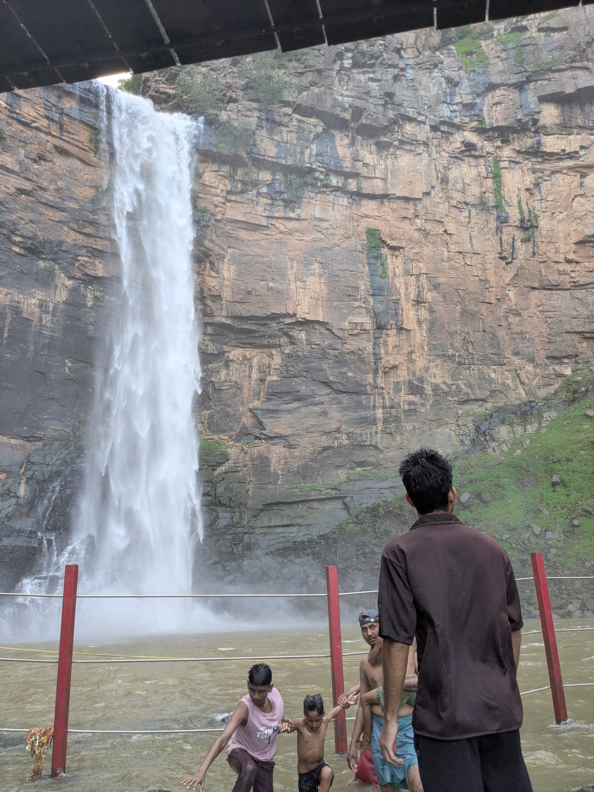
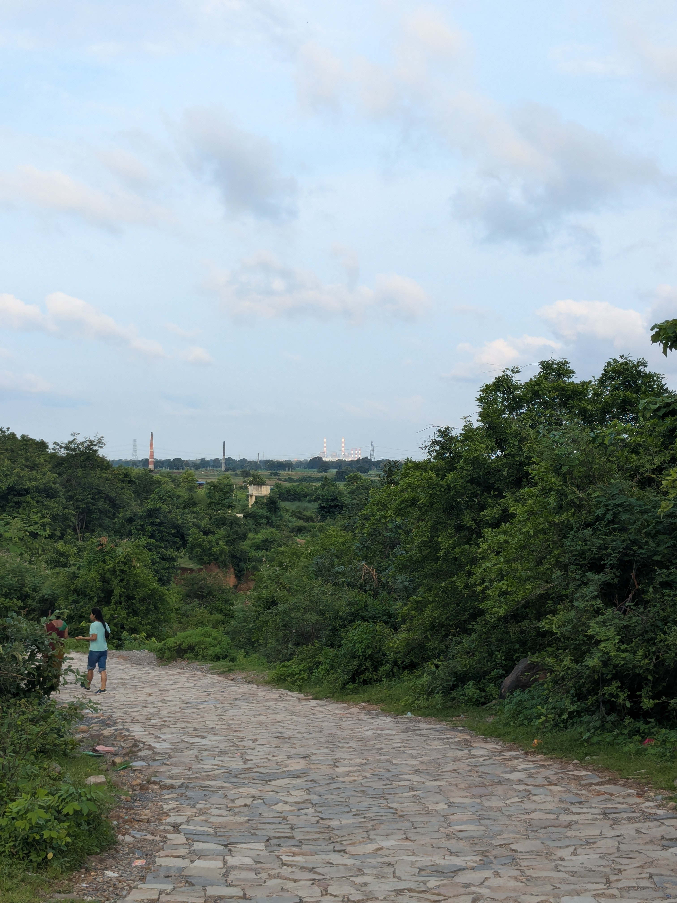
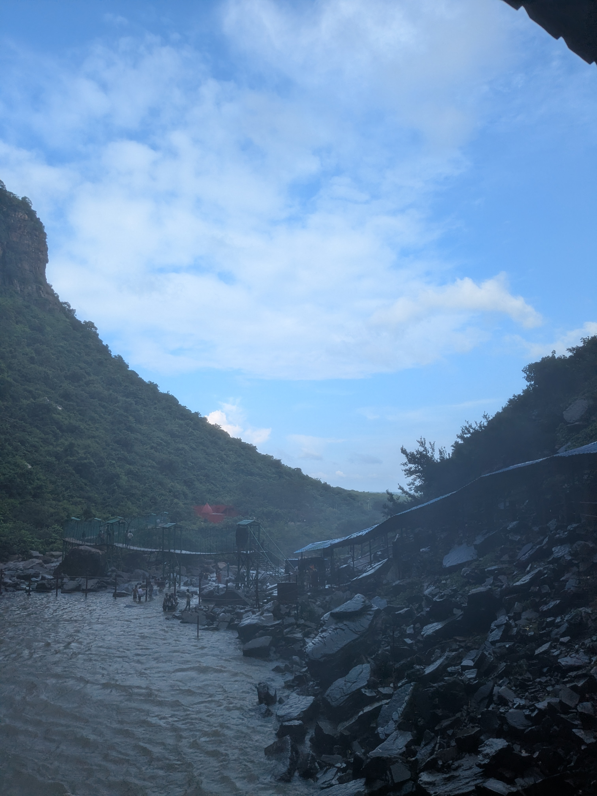
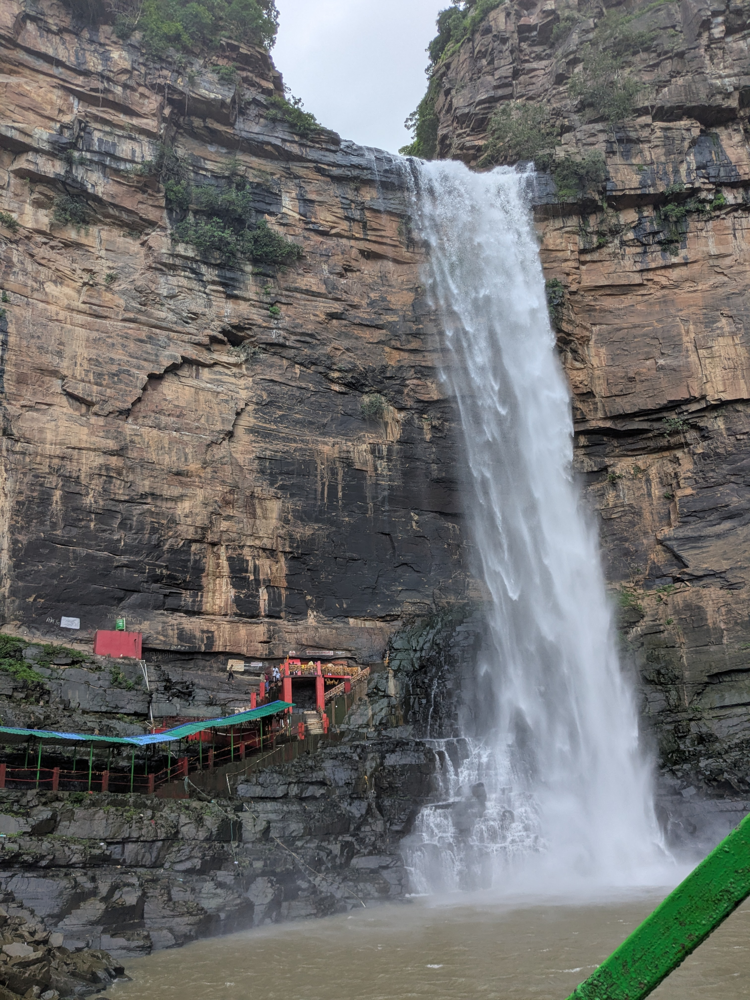

Hola, Namaste, Hello, Shashriyakal, Radhe Radhe, Raam Ram, Salaam! I am new to the blogging thing and also new to Bihar. I was born in Bihar but not brought up here. I wasn’t a big fan of Bihar and definitely didn’t know that Bihar has gems like Sita Kund, Lakshman Kund, or the one I visited day before yesterday—Tutla Bhawani.
So without wasting all your time, let me get straight to the topic. I’ll let you guys know about places I think are awesome in Bihar.
Tutla Bhawani is a place with mountains, waterfalls, monkeys, greenery, snacks under budget, and not to mention—a photogenic view.
This place is situated in Rampur, a small village near the Sone River. It shares its boundaries with many other attractive places such as Rohtas Valley, Belwai Waterfall, Geeta Ghat Waterfall, and much more. An interesting thing: a resort is in the making there with a water park! The only trouble is reaching the destination. The roads are not so good, but once you reach, it’s worth the trouble.
I visited on a weekday. You may visit any day you choose, but keep in mind that darshan closes at 5:00 PM IST. You’ll need to get a ticket worth ₹5 at the entrance. Also, if you don’t want to walk 900–1.2 km along the meadowy, green, calm path, you can take a tuk-tuk present at the gate itself for ₹10 per person.
My tip: Walk to the temple and also come back on foot.
Once you’ve entered the gate, you have a nearly 1 km short trek to go, with a river flowing beside you with super clean water. If you get tired, don’t hesitate to open your shoes and sit there for a while.
When we completed our mini trek, we saw a hanging bridge—it’s fun to walk on it! Or, if you want to take a bath before going to the mandir, you can go below the bridge and enjoy a nice cool bath.
After you’re done, you can get on the bridge or simply walk to the end of the river and take the stairs that lead to the small temple on the mountain. It’s beautiful—you’ll fall in love with it. The cold sprinkles of water and the surroundings are manmohak (captivating).
Do your worship, take blessings from the priest (Pandit Ji), and head back. Enjoy the water splashes, but keep in mind there are many monkeys. If you’re not an animal lover, just ignore them or take someone with you for company. You won’t want to get into trouble with the animals there, right? You’re going for peace.
Now, to get back—take the tuk-tuk or walk. Walking is the best option in my opinion, but if you’re not feeling well or are tired, please take the tuk-tuk.
Hope you enjoy the travel. It’s in Bihar and I’m so proud of it. When I used to hear “Bihar,” I never thought of mountains—let alone waterfalls! This was just awesome, so do visit. It’s great.
And everyone who reads this article, please do let me know in the comments or whatever means is available to you if you have any queries or suggestions for me. Great travelling!